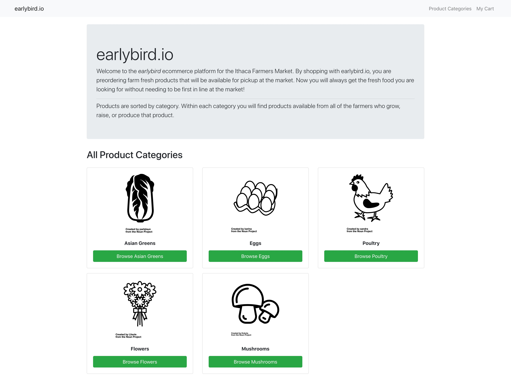
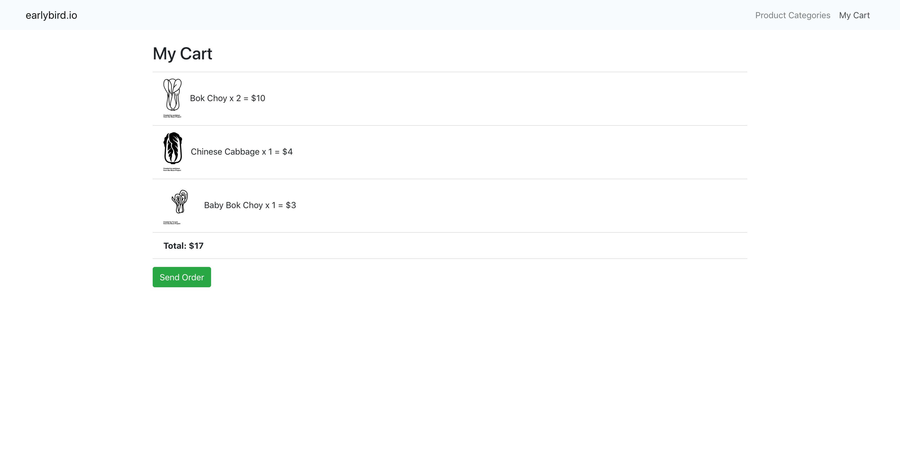
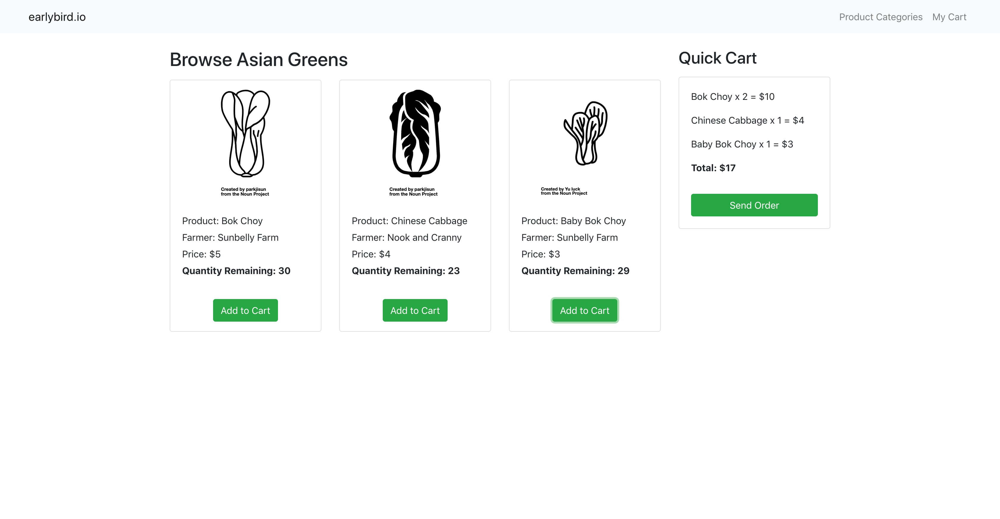

<div id="ajax-page" class="ajax-page-content">
    <div class="ajax-page-wrapper">
        <div class="ajax-page-nav">
            <div class="nav-item ajax-page-prev-next">
                <a class="ajax-page-load" href="anomalous-encounters.html"><i class="lnr lnr-chevron-left"></i></a>
                <a class="ajax-page-load" href="dream-catcher.html"><i class="lnr lnr-chevron-right"></i></a>
            </div>
            <div class="nav-item ajax-page-close-button">
                <a id="ajax-page-close-button" href="#"><i class="lnr lnr-cross"></i></a>
            </div>
        </div>

        <div class="ajax-page-title">
            <h1>earlybird.io</h1>
        </div>

        <div class="row">
            <div class="col-sm-7 col-md-7 portfolio-block">
                <div class="owl-carousel portfolio-page-carousel">
                    <div class="item">
                        
                    </div>
                    <div class="item">
                        
                    </div>
                    <div class="item">
                        
                    </div>
                </div>
                <div class="block-title">
                    <h3>Video Demo</h3>
                </div>
                <div class="portfolio-page-video embed-responsive embed-responsive-16by9">
                  <!-- <iframe class="embed-responsive-item" src="https://player.vimeo.com/video/97102654?autoplay=0"></iframe> -->
                  <iframe class="embed-responsive-item" src="https://www.youtube.com/embed/bw0Mg9vw3nE?rel=0" frameborder="0" allow="accelerometer; autoplay; clipboard-write; encrypted-media; gyroscope; picture-in-picture" allowfullscreen></iframe>
                </div>

                <!--
                <div class="portfolio-page-image">
                    
                </div>
                -->

                <script type="text/javascript">
                    jQuery(document).ready(function($){

                        $('.portfolio-page-carousel').owlCarousel({
                            smartSpeed:1200,
                            items: 1,
                            loop: true,
                            dots: true,
                            nav: true,
                            navText: false,
                            margin: 10
                        });

                    });
                </script>
            </div>

            <div class="col-sm-5 col-md-5 portfolio-block">
                <!-- Project Description -->
                <div class="project-description">
                    <div class="block-title">
                        <h3>Description</h3>
                    </div>
                    <ul class="project-general-info">
                        <li><p><i class="fab fa-github"></i> <a href="https://github.com/lauradarlak/early-bird/tree/master" target="_blank">Project Repo</a></p></li>
                        <li><p><i class="fas fa-laptop-code"></i> <a href="https://earlybird-app.herokuapp.com/" target="_blank">Heroku Demo</a></p></li>
                    </ul>

                    <p class="text-justify"><strong>earlybird.io</strong> is an ecommerce platform for farmers markets built with a React-Redux front-end and connected to a Rails API backend. Have you ever gone to a farmers market only to find that every vendor is sold out of eggs, organic bacon, or fresh whole chickens? By shopping with earlybird.io, users are preordering farm fresh products that will be available for pickup at the market. Now users will always get the fresh food they are looking for without needing to be first in line at the market!</p>
                    <ul class="text-justify">
                        <li>Built front-end UI using React and Redux middleware to respond to and modify state change</li>
                        <li>Collected and persisted data to Rails API</li>
                        <li>Utilized React-Router to provide dynamic routing within a Single Page App (SPA)</li>
                        <li>Made use of async actions within Redux-thunk and fetch()</li>  
                    </ul>
                    <!-- /Project Description -->

                    <!-- Technology -->
                    <div class="tags-block">
                        <div class="block-title">
                            <h3>Technology</h3>
                        </div>
                        <ul class="tags">
                            <li><a>Rails API</a></li>
                            <li><a>React</a></li>
                            <li><a>Redux</a></li>
                        </ul>
                    </div>
                    <!-- /Technology -->
                </div>
                <!-- Project Description -->
            </div>
        </div>
    </div>
</div>
